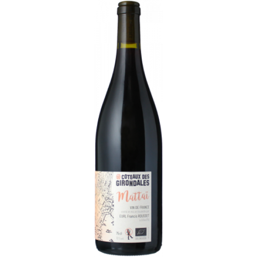

Digeste et fruitée, il est joliment structuré par des tannins fins, de belles notes épicées, des fruits rouges et de la myrtille
10°C Haute Savoie
Coteaux des Girondales|2022
Cuvée Mattaï
Retour aux choix des vins
Biologique
